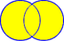

Using the Engineering Literature by
Using the Engineering Literature by Boolean operators are words (or, and, not) used to connect search terms to expand or narrow a search within a database to locate relevant information.
It is helpful to diagram the effects of these operators:
|
 women or females |
Or retrieves records that contain anyof the search terms. It expands the search. Therefore, use "or" in between terms that have the same meaning (synonyms) or equal value to the search. |
|
women and media |
And retrieves records that contain all of the search terms. It narrows or limits the search. Therefore, use "and" in between terms that are required to make the search specific. |
|
image not weight |
Not eliminates records that contain a search term. It narrows or limits the search. Therefore, use "not" in front of a term to ensure that the search will not include that term. Warning: Some databases use "and not" instead of "not." Check the database help screen. |